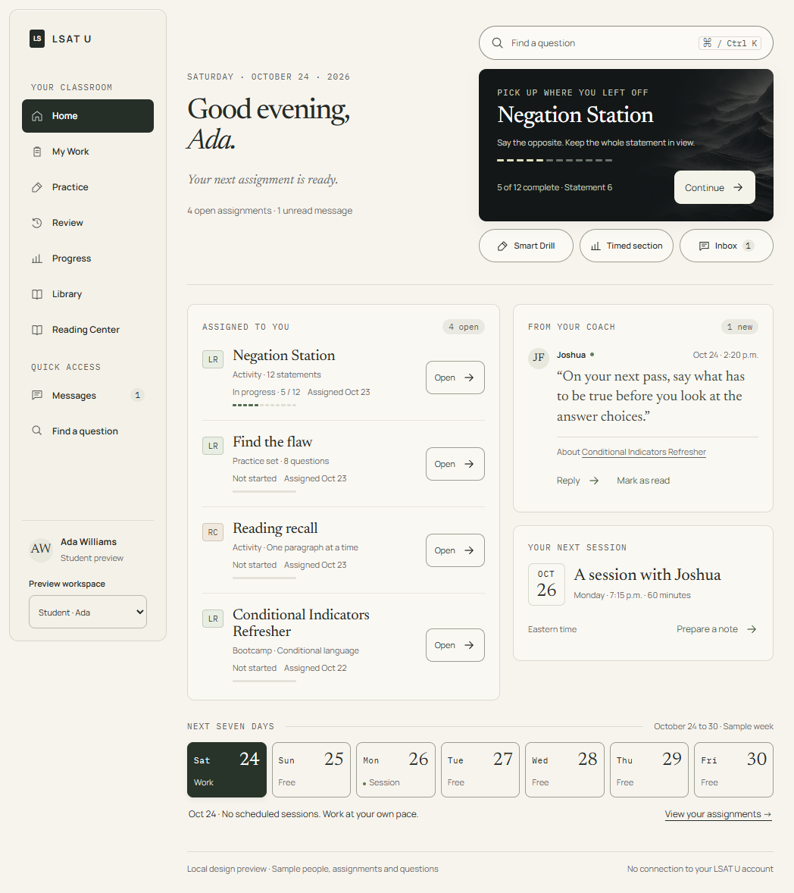
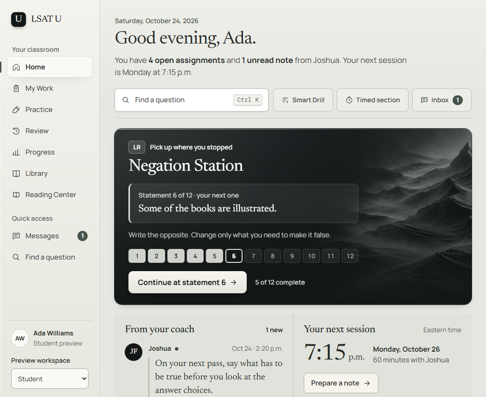

09 Focus Studio
Open interactive version
Local synthetic prototypes. Version 11 was designed by Claude Opus 5.5 at medium effort. Click an image for its full size. No current signed-in production screenshot is available; this board does not assert a live comparison or user approval.


